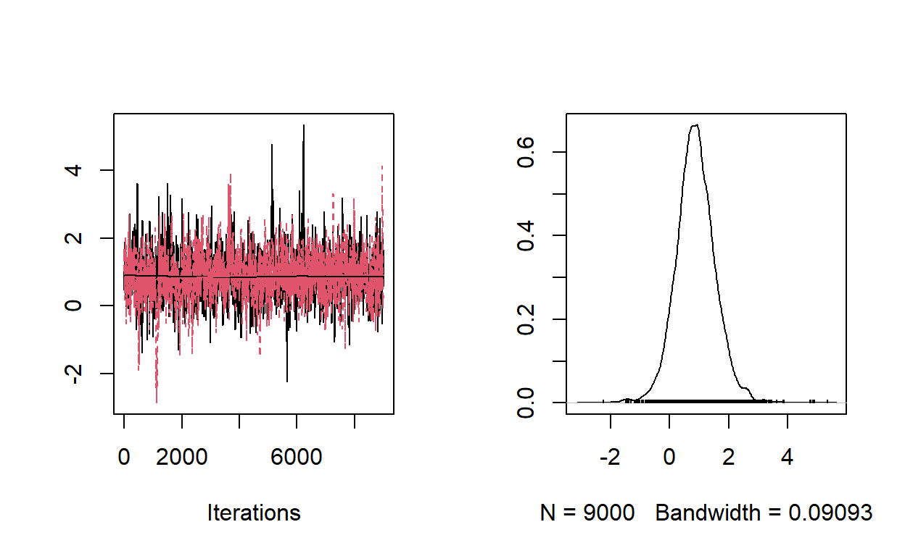

Overiview of the site-occupancy model
If you’re here for the nimbleEcology implementation, and feel comfortable with occupancy models, you can skip ahead to the next section.
In species distribuiton modeling, we’re often interested in whether animals’ presence on the landscape is influenced by or correlated with a spatiotemporal factor. For example, we might be interested in whether a species prefers dense or sparse tree cover, whether a species’ range is growing or declining over time, or whether a management strategy is actually working to
Site-occupancy models are a type of statistical structure that allow us to ask these questions when our detection process is imperfect.
Structure
Let’s start by putting down some statistical equations for the simplest hierarchical site-occupancy model.
\[y_{ij} \sim \text{Bernoulli}(z_i * p_{ij})\] \[z_i \sim \text{Bernoulli}(\psi_i)\] \[\text{logit}(\psi_{i}) = x_{i}^T\beta\] \[\text{logit}(p_{ij}) = w_{ij}^T\gamma\]
where \(i\) and \(j\) index site and replicate visit, respectively; \(y_{ij}\) is a single detection or nondetection (1 or 0) at site \(i\), replicate \(j\); \(z_i\) is a latent state representing occupancy; \(\psi_i\) is the probability that site \(i\) is occupied; \(p_{ij}\) is an observation-specific conditional detection probability; \(x_i\) and \(w_{ij}\) are vectors of covariates of interest; and \(\beta\) and \(\gamma\) are vectors of coefficients representing the effect of covariates on occupancy and detection, respectively.
Phew. Let’s break that down.
In the first equation, we describe the probability distribution for our detection-nondetection observations, \(y_{ij}\). We say that each data point is Bernoulli-distributed: we have a probability of \(z_i * p_{ij}\) of seeing the animal. Since we either see it or we don’t, the probability of not seeing the animal is \(1 - z_i * p_{ij}\).
In the occupancy model, we assume that each “site” is in fact occupied or unoccupied, but that we can’t observe this condition perfectly. (I put “site” in quotation marks because the “site” need not be strictly spatial–for example, we could treat the occupancy status of a single location in different years as independent. Because the assumption that occupancy status doesn’t change is called “closure,” we can also call this unit a “unit of closure.”) In our second equation, we represent this with the latent state \(z_i\), which has a value of 1 if site \(i\) is occupied and 0 if it is not. If the site is unoccupied, we have no chance of seeing the animal. In that case, \(z_i = 0\) and the probability of \(y_ij = 1\) is also 0. Think of \(z_i\) as a switch that turns the probability of seeing the animal on or off. The “conditional probability of detection,” i.e. the probability that we see the animal when it’s present on a given observation, is \(p_ij\). It’s conditional because it only affects the data likelihood when \(z_i =1\). In the second equation, we define the distribution for the latent state \(z_i\), which has a probability of \(\psi_i\).
The third equation links our probability of occupancy, \(\psi_i\), to covariates. We say that, on the logit scale (which is a popular but arbitrary transformation from \((-\infty, \infty)\) to \((0, 1)\)), \(\psi_i\) is a linear combination of some observed data describing our site, \(x_{i}\), with coefficients \(\beta\). We want to estimate \(\beta\) to get confidence or credible intervals on those effects.
The fourth equation replicates this logit-link structure for our detection probability, \(p\), and some covariates \(w\) with coefficients \(\gamma\).
There are many other, much more comprehensive explanations of the occupancy model out there, including entire textbooks. I link some of these at the end of the post.
What is nimbleEcology?
nimbleEcology is an R package that makes it easier to implement some common ecological models in the general statistical software NIMBLE.
The package provides a series of distributions that you can use in NIMBLE models, similar to familiar distributions like dpois() or dbinom(). This will become clear with the example in this blog post, where I show how the entire occupancy hierarchical probability distribution for the occupancy model can be written with y ~ dOcc_v(...).
Why should I use it?
- Less risk of coding errors. We went ahead and implemented the occupancy distribution so you don’t have to. This saves lines of code and hopefully reduces some of the headache that inevitably comes from debugging a new model.
- It’s easily modifiable. Implementing models in nimbleEcology, compared to something like unmarked, makes it easier to modify and customize your model when you’re ready to get fancy.
- It’s fairly efficient. nimbleEcology uses marginalized distributions, saving memory and sometimes (but not always) increasing computational efficiency.
- Swap between MLE or Bayesian methodology. This maybe isn’t a need so much as an interesting feature, but with NIMBLE you have access to both maximum likelihood and Bayesian (MCMC) estimation with very few changes to the model code.
Implementing the occupancy model with nimbleEcology

Figure 1: Swift (c) J Tanner 2022. https://macaulaylibrary.org/asset/409111121
In this section, I showcase the use of nimbleEcology for implementing an occupancy model with simulated data.
Let’s say we have some data we collected in a study on how the occupancy of a bird, the white-throated swift. I have my detection/nondetection data in a matrix called “obs”. We surveyed 200 sites three times each, and recorded whether or not we observed swifts during those surveys.
Here are the first six rows in the data:
head(obs)
[,1] [,2] [,3]
[1,] 0 0 0
[2,] 0 0 0
[3,] 1 1 0
[4,] 0 0 1
[5,] 1 0 1
[6,] 0 0 0We detected the swift at four of the first six sites. Here are a few more summary statistics:
[1] 69[1] 0.4879227We want to know how the elevation and amount of forest cover impact the occupancy of our swifts in the study area. We measured elevation and forest cover at each of our sites. Here’s the first six sites’ data:
head(siteLevelData)
elevation forestCover
1 -0.9559221 0.37841493
2 -0.9790799 -0.01406795
3 0.4368064 0.17601854
4 -0.7193709 -0.92947860
5 -0.2721558 -0.43107788
6 0.0428613 0.49594396(In the previous section, each row of these data are an \(x_i\).)
We’re using an occupancy model because we think our data contains false negatives–i.e., sometimes we didn’t see a swift at an occupied site. We think that sometimes, high wind conditions could reduce our ability to see swifts. And we also don’t want to rule out the possibility that detection probabilities vary with elevation or tree cover. Disambiguating the effects of a single variable on both detection and probability is one of the main benefits of th occupancy model.
Here’s data from the first six sites for our three detection variables.
head(obsLevelData[,,"elevation"])
[,1] [,2] [,3]
[1,] -0.9559221 -0.9559221 -0.9559221
[2,] -0.9790799 -0.9790799 -0.9790799
[3,] 0.4368064 0.4368064 0.4368064
[4,] -0.7193709 -0.7193709 -0.7193709
[5,] -0.2721558 -0.2721558 -0.2721558
[6,] 0.0428613 0.0428613 0.0428613head(obsLevelData[,,"forestCover"])
[,1] [,2] [,3]
[1,] 0.37841493 0.37841493 0.37841493
[2,] -0.01406795 -0.01406795 -0.01406795
[3,] 0.17601854 0.17601854 0.17601854
[4,] -0.92947860 -0.92947860 -0.92947860
[5,] -0.43107788 -0.43107788 -0.43107788
[6,] 0.49594396 0.49594396 0.49594396head(obsLevelData[,,"windLevel"])
[,1] [,2] [,3]
[1,] 0.5818751 0.6126206 -0.7922553
[2,] 0.2276861 0.7952973 -0.6619532
[3,] 0.9545355 -0.6955473 -0.6014542
[4,] 0.8137390 0.4535272 0.6110631
[5,] 0.5897824 -0.3132945 0.1687786
[6,] 0.3905541 0.3720862 -0.2839954For the sake of simplicity, we’ll assume that our sites are random and representative of the study area, that we have good reason to believe we aren’t recording false positive observations, and that we don’t think our detection process is variable except due to the factors we’re considering (wind, forest cover, and elevation).
Let’s get to modeling!
First, to use NIMBLE, we’re going to define a nimbleCode object. This code object uses a pseudo-code language, blending .
NIMBLE uses a declarative language, meaning order doesn’t matter. A consequence of this is that you can’t overwrite values. Instead of stepping through lines of code, think of nimbleCode as defining relationships between variables (nodes).
For a more in-depth overview of the NIMBLE code language
Ok, enough stalling. Here’s the NIMBLE code for our model, with comments.
occuCode <- nimbleCode({
# Loop over sites
for (site in 1:nSites) {
# Here's the nimbleEcology magic: the dOcc_* distribution.
# This line of code says that our observations follow a probability
# distribution in the occupancy model, with a single occupancy probability
# and a vector of detection probabilities corresponding to each
# observation. Note that we wass a whole site's worth of data at once.
# Try running ?nimbleEcology::dOcc in your R session for more info.
obs[site, 1:nReps] ~ dOcc_v(
probOcc = psi[site],
probDetect = p[site, 1:nReps],
len = nReps
)
# We define a logit-linear relationship between
# inprod(x, y) is the same as x[1] * y[1] + x[2] * y[2] + ...
# Note that:
# - We can put logit() on the left-hand side like a model equation
# - The data intercept is represented in model matrix notation inside occuCovars
# (more on that in a second)
# - We need EXPLICIT INDEXING for our vectors (beta[1:nBeta], not just beta).
# This is an important difference between nimbleCode and base R
logit(psi[site]) <- inprod(occuCovars[site, 1:nBeta], beta[1:nBeta])
# Loop over reps
for (rep in 1:nReps) {
# Do this again for each detection probability. Only difference is that
# p is now two-dimensional and detectionCovars is three-dimensional.
logit(p[site, rep]) <- inprod(detectionCovars[site, rep, 1:nGamma],
gamma[1:nGamma])
} # END reps loop
} # END site loop
# Priors. We need these in order to do MCMC sampling. I'm going to choose some
# arbitrary, mostly uninformative priors.
# Priors on each covariate on occupancy:
for (i in 1:nBeta) {
beta[i] ~ dnorm(0, sd = 2.5)
}
# Priors on each covariate on detection:
for (i in 1:nGamma) {
gamma[i] ~ dnorm(0, sd = 2.5)
}
})
Some of this code might look unfamiliar to folks who have done Bayesian occupancy modeling before. I’ve gone out of my way to make things generalizable, using inprod() over, for example, intercept + elev[i] * b1 + forest[i] * b2. My motivation for doing this is that it’s super generalizable, and I’ll be able to add or remove covariates without making any changes to my code.
Note that because we’re using nimbleEcology, we’ve “marginalized over” the latent state \(z\) and it’s not in the model. This is a good thing for a couple reasons: it reduces the amount of RAM needed, which can be important for large datasets; it slightly speeds up mixing time in some cases; and it saves some lines of code. However, there are often cases where we want \(z\), such as if we want a posterior distribution on the number of occupied sites. In that case we shouldn’t use nimbleEcology (but NIMBLE will do fine).
The next step in the NIMBLE workflow is to define a NIMBLE model object. This turns our code, which describes a series of nodes and the relationships between them, into an actual object composed of that structure.
All the data wrangling I have to do is just to get my inputs in the same form as I’ve described them.
Because I’m using inprod() I need to make sure my data have intercept columns first.
siteLevelData$intercept <- 1
obsLevelData[,, "intercept"] <- 1
occu_model <- nimbleModel(
code = occuCode,
constants = list(
nBeta = 3,
nGamma = 4,
nSites = nrow(obs),
nReps = ncol(obs)
),
data = list(
obs = obs,
# I like indexing these here for two reasons: (1) I make sure they're going
# into the model in order, and (2)
detectionCovars =
obsLevelData[,, c("intercept", "elevation", "forestCover", "windLevel")],
occuCovars = siteLevelData[, c("intercept", "elevation", "forestCover")]
),
inits = list(
beta = rnorm(3),
gamma = rnorm(4)
)
)
That’s it! We now have a nimbleModel object.
One of my favorite things about working in NIMBLE is that we can play with and query the nimbleModel.
# Peek inside the model: what are the data values for the 22nd site?
occu_model$obs[22,]
[1] 0 0 0# What's the corresponding site-level data at this site?
occu_model$occuCovars[22,] # Intercept, elevation, tree cover
[1] 1.0000000 0.2463764 -0.1503483# What's the log-likelihood of the model given initial values?
# (If this is non-NA, that means our model is initialized properly)
occu_model$calculate()
[1] -303.6887If we wanted to, we could modify data or initial values at this stage, but not constants, which are “baked in” to the model when its built.
I’ll go quickly over this next part, since using MCMC with NIMBLE is better explained elsewhere. Briefly, we’re going to build an MCMC object and then compile the whole thing so we’re ready to do some MCMC sampling.
mcmc <- buildMCMC(occu_model)
===== Monitors =====
thin = 1: beta, gamma
===== Samplers =====
RW sampler (7)
- beta[] (3 elements)
- gamma[] (4 elements)# Compile to C++. This takes a second, but it's worth it!
complist <- compileNimble(occu_model, mcmc)
# We can still query / modify the compiled model
complist$occu_model$obs[22,]
[1] 0 0 0Now let’s do some MCMC sampling. 10,000 MCMC samples on 2 chains is a bit overkill for this model, but it’s quick–this takes about 20 seconds to run on my machine.
samples <- runMCMC(complist$mcmc,
niter = 10000,
nburnin = 1000,
nchains = 2,
thin = 1,
samplesAsCodaMCMC = TRUE)
|-------------|-------------|-------------|-------------|
|-------------------------------------------------------|
|-------------|-------------|-------------|-------------|
|-------------------------------------------------------|We can plot some of our chains to see how they mixed, for example the logit-scale effect of elevation on occupancy, which is beta[2] (because beta[1] is the intercept).
plot(samples[, "beta[2]"])

I like the package MCMCvis for MCMC summaries.
summary <- MCMCvis::MCMCsummary(samples)
summary$param <- c("Intercept (occu)", "Elev (occu)", "Forest (occu)",
"Intercept (det)", "Elev (det)", "Forest (det)", "Wind (det)")
summary[, c("param", "mean", "2.5%", "97.5%")]
param mean 2.5% 97.5%
beta[1] Intercept (occu) 0.27558912 -0.3995926 1.42759930
beta[2] Elev (occu) 0.87816447 -0.4128858 2.23862643
beta[3] Forest (occu) -1.82784288 -3.4780877 -0.62010363
gamma[1] Intercept (det) -0.81601934 -1.3094703 -0.35864626
gamma[2] Elev (det) 0.50585592 -0.1835229 1.26530091
gamma[3] Forest (det) 0.03689909 -0.7124781 0.69144787
gamma[4] Wind (det) -0.50269720 -0.9427505 -0.07756671We found a negative effect of forest cover on occupancy, and a negative effect of wind speed on detection. Nice.
Next time…
Stay tuned for two follow up posts. In the first, I’ll discuss easy ways to extend the occupancy model in NIMBLE to showcase the flexibility of this tool. Then, I’ll showcase an N-mixture model, and we’ll explore a case where marginalizing over a latent state can dramatically improve computation time.
Thanks for reading! Hit the “contact me” button at the top of the page if you have any questions or feedback.
Citations and additional reading
All the code in this exercise is available in the Github repository for this blog, specifically here. Please feel free to download and play around with this .Rmd file, and to copy and use this code freely.
Relevant papers and books:
- Original MacKenzie et al. 2002 paper on site-occupancy model
- Ponisio et al. 2020 paper marginalizing distributions in NIMBLE
- Occupancy Estimation and Modeling textbook by MacKenzie et al.
As always, check out the NIMBLE User Manual and the NIMBLE examples page for more NIMBLE stuff.